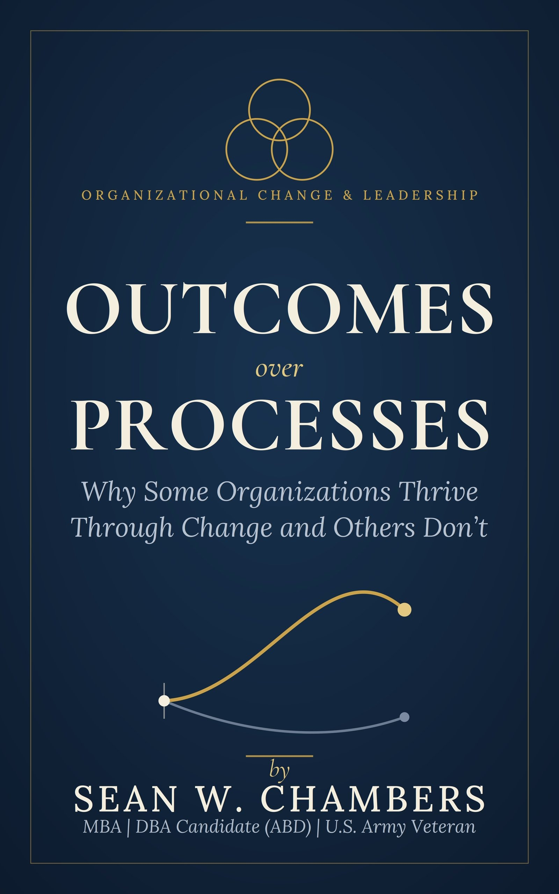

Outcomes Over Processes is the field-tested case for why some organizations thrive through change while others stall — and a practical playbook for leading the shift.

"Process becomes the point. Outcomes get assumed. This book is about closing that gap."From the introduction
Healthy organizations keep the order right: the process exists to serve the outcome. The trouble starts when that order flips — teams get measured on activity, the process becomes the goal, and everyone stays busy while the customer stops being better off.
Drawing on case studies, history, and the shift now underway in the AI era, this book shows why the organizations that endure hold the outcome fixed and let the process flex — and how leaders can do the same.
Measures the work performed. Defends "how we've always done it." Gets overtaken when the market moves.
Measures the value delivered. Flexes the process. Thrives through change.
Concrete, evidence-based tools you can put to work on your own team.
Recognize the moment a process quietly becomes the goal it was meant to serve.
Build metrics around the value customers receive — not the volume of work you do.
Overcome resistance and move an organization to an outcome-focused footing without it snapping back.
Keep the discipline of good process without letting it crowd out the result.
Understand what changes — and what matters more than ever — as work is automated.
Run the Outcome Focus Self-Assessment and know exactly where you stand.
Sean is an operations and pipeline leader, a U.S. Army veteran, and the author of Outcomes Over Processes. Years of midstream and operations leadership left him with a question about why some organizations focus on what they deliver for the customer while others fixate on the activity of producing it.
He holds an MBA with a minor in Data Analytics from Texas A&M University–Corpus Christi and is a Doctor of Business Administration candidate (ABD) at William Howard Taft University. Every factual claim in the book is independently verified against primary sources. He writes from Midland, Texas.
Available in hardback, paperback, and ebook. First edition, 2026.